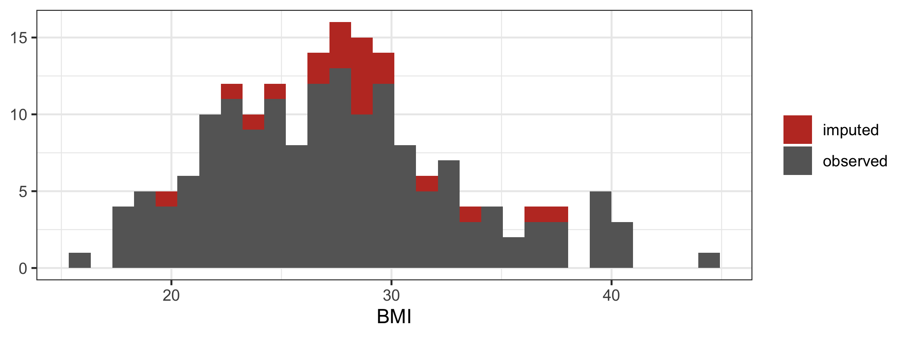

quantify how much data you would lose by dropping every incomplete row;
fill missing values with a mean or a median, and measure what that does to the spread of the column;
say why the median is the safer default for a skewed variable;
explain what iterative imputation does differently, and what it assumes;
argue for leaving a value missing rather than inventing one.
Why this, here
Exercise 2.3 — Cleaning and encoding left the extract clean but incomplete. The missing-value codes are now real missing values, which means they can finally be counted — and something has to be decided about them, because most models will not accept a missing value at all.
This exercise is deliberately partial. It works two approaches through properly, in one language each, and leaves the rest for you to try. Mean and median imputation are shown in R; iterative imputation is shown in Python. The tasks ask you to produce the missing halves. That is the point: by now you have seen enough of both languages that translating a method you understand is a reasonable thing to ask.
Starting point
Exercise 2.3 — Cleaning and encoding left the extract clean but incomplete. Each chapter stands alone, so the block below repeats that cleaning in one go — the codes recognised, the labels standardised, the two correctable heights fixed, the two impossible values admitted as missing, and BMI derived.
Note the arithmetic. The three columns are missing different numbers of values, but the count of complete rows is lower than any of them individually, because the gaps fall in different rows. This is the first argument against dropping incomplete rows: the loss compounds across columns, and it compounds faster the more columns you have.
Mean and median imputation, in R
The idea is the simplest one available: put the column’s own average where a value is missing. It needs no model, no package, and one line.
imp_mean <- gp |>mutate(across(all_of(num_cols),~if_else(is.na(.x), mean(.x, na.rm =TRUE), .x)))imp_median <- gp |>mutate(across(all_of(num_cols),~if_else(is.na(.x), median(.x, na.rm =TRUE), .x)))cat("missing left, mean: ", sum(is.na(imp_mean[num_cols])), "\n")
Filling 9 values of BMI with one single number means nine rows now sit exactly on top of each other. The column’s standard deviation must fall. Measure it rather than taking it on trust:
Every standard deviation shrank. That matters because a standard deviation is what a confidence interval is built from: impute the mean into 10% of a column and every interval computed from it afterwards is narrower than the evidence justifies. You have not added information, but you have made the data look as though you had.
Why median, for this column
BMI is right-skewed and contains one implausible value of 61.2. The mean is pulled upward by it; the median is not.
cat("BMI mean :", round(mean(gp$BMI, na.rm =TRUE), 2), "\n")
Every imputed BMI inherits whichever of those you chose. With a skewed column, the mean puts nine patients at a value that more than half the cohort sits below.
A derived feature does not impute itself
Here is the trap. BMI was computed from height and weight before the imputation, so filling the gaps in those two columns does nothing to it — the derived column still has every gap it started with.
cat("BMI missing, before imputing:", sum(is.na(gp$BMI)), "\n")
#> BMI missing, before imputing: 20
cat("BMI missing, after imputing height and weight:",sum(is.na(imp_median$BMI)), "\n")
#> BMI missing, after imputing height and weight: 20
Unchanged. The fix is to recompute the derived column from the filled inputs, and the order matters: impute first, then derive.
Note what those recomputed BMI values now are: a ratio of two numbers that were themselves invented. The uncertainty does not announce itself — it is buried one step further from the data than it was before.
Now colour the imputed rows, because a value at the median does not announce itself in a histogram either — it lands inside the existing peak and disappears:
imp_median |>mutate(source =if_else(is.na(gp$weight_kg) |is.na(gp$height_cm),"imputed", "observed")) |>ggplot(aes(x = BMI, fill = source)) +geom_histogram(bins =30) +scale_fill_manual(values =c(imputed ="#c0392b", observed ="grey40")) +labs(x ="BMI", y =NULL, fill =NULL)

That is the honest picture, and it is also the warning: had you not kept track of which rows you filled, nothing in the finished column would tell you. A column of imputed values looks exactly like a column of measurements. Record which is which — a BMI_was_missing indicator costs one column and keeps the distinction available to everything downstream.
Iterative imputation, in Python
Mean imputation ignores every other column. If a patient’s BMI is missing but their age and systolic_BP are recorded, those two carry information about the likely BMI, and the mean throws it away.
Iterative imputation uses it. It models each column with missing values as a function of the other columns, predicts the gaps, and repeats — each round using the previous round’s filled-in values — until the estimates settle. In scikit-learn it is still marked experimental, so it has to be enabled explicitly.
max_iter was 20 and it stopped well before that: with three columns and few gaps there is very little for the rounds to refine, so the estimates stop moving almost immediately. Read the number as a diagnostic — on a wide table it would be larger, and an imputer that runs to max_iter without settling is telling you something.
Compare what the two approaches put in the same cells:
#> age bp mean_filled iter_filled
#> 11 71.0 139.0 27.467513 NaN
#> 16 52.0 130.0 27.467513 NaN
#> 27 54.0 128.0 27.467513 NaN
#> 35 57.0 131.0 27.467513 NaN
#> 39 40.0 116.0 27.467513 NaN
#> 46 33.0 127.0 27.467513 NaN
#> 56 59.0 138.0 27.467513 NaN
#> 62 52.0 119.0 27.467513 NaN
#> 68 50.0 136.0 27.467513 NaN
The mean column is one number repeated. The iterative column varies, because it is reading each patient’s other measurements. Whether it varies correctly is a different question — it is a model, and it carries a model’s assumptions: that the columns are related in a way the imputer can represent, and that the missingness does not itself depend on the value that is missing.
For this dataset we happen to know the second assumption holds, because data/PROVENANCE.txt records that values were blanked out at random after the outcome was generated. On real data you would not know that, and you would have to argue for it.
Task 1 — The approach neither section used
Dropping every incomplete row is the default in a surprising amount of published analysis, usually silently. Quantify it.
# Replace every ______ below, then run this cell.kept = gp_py.______()print(kept.shape[0], "of", gp_py.shape[0])print("lost:", round(100* (1- kept.shape[0] / gp_py.shape[0]), 1), "%")# Did dropping change who is in the data?print(gp_py["diabetes"].mean().round(3))print(kept["______"].mean().round(3))
TipStuck?
The first blank is the method that removes rows containing any missing value. The last is the diabetes column, so you can compare its rate before and after.
# Replace every ______ below, then run this cell.kept <- gp |>filter(______(gp))cat(nrow(kept), "of", nrow(gp), "\n")cat("lost:", round(100* (1-nrow(kept) /nrow(gp)), 1), "%\n")# Most-frequent-category imputation, for a categorical columnmode_site <-names(sort(table(gp$GP_practice), decreasing = ______))[1]mode_site
TipStuck?
The first blank is the function returning TRUE for rows with no missing value anywhere. For the second, you want the largest count first.
Task 2 — Translate the other half
Each language above did only one thing. Produce the other.
Write mean and median imputation in Python and reproduce the standard-deviation comparison from the R section.
# Replace every ______ below, then run this cell.imp_mean_py = gp_py.copy()imp_mean_py[num_cols] = gp_py[num_cols].fillna( gp_py[num_cols].______())sd_before = gp_py[num_cols].std()sd_after = imp_mean_py[num_cols].______()print((100* (sd_after - sd_before) / sd_before).round(1))
TipStuck?
Both blanks are the same kind of thing: the first is the statistic you are filling with, the second is the one you are measuring. fillna accepts a Series of per-column values.
Iterative imputation in R lives in the mice package, whose default method for a numeric column is predictive mean matching rather than a regression prediction. Run it if mice is installed; read the answer if not.
# Replace every ______ below, then run this cell.library(mice)fit <-mice(gp_py[______], m =1, maxit =10, printFlag =FALSE)imp_iter_r <-complete(fit)sum(is.na(imp_iter_r))
TipStuck?
Pass the same three numeric columns the Python side used. mice will not impute a patient identifier and should not be shown one.
Reflection
Three columns were missing 11, 9 and 13 values, yet more than 11, 9 or 13 rows were incomplete. Explain the arithmetic to someone who has not seen the data, and say what it implies for a dataset with 50 columns.
Mean imputation shrank every standard deviation. Name one statistic you would report after imputing that would now be wrong, and say in which direction.
The iterative imputer produced a different value for each patient. Give one reason that is better than a single repeated number, and one reason it could be worse.
Under what circumstance is leaving a value missing — and telling the reader it is missing — a better answer than any of the methods here?
Stretch
Stretch 1 — Make the imputation wrong on purpose
The values in this file were blanked out at random. Blank out BMI instead for the patients with the highest systolic_BP, then impute with the mean and compare the imputed values against the ones you deleted. You know the truth, so you can measure the error — and see how an assumption of random missingness fails when it is not true.
Stretch 2 — Does better imputation buy a better model?
Fit the same classifier on the mean-imputed and the iteratively imputed data and compare the test-set accuracy. Form a view before you run it. Then consider how much of any difference you would be willing to attribute to the imputer, given that the comparison rests on one split.
What you can and cannot now claim
You can say the extract is now complete: no model will refuse it, and you can state exactly which values were observed and which you supplied, and by what rule.
You cannot say the imputed values are correct. They are estimates, and the mean and median versions are estimates that ignore every other column in the table. You also cannot claim your downstream uncertainty is honest — the shrinkage you measured is still there.